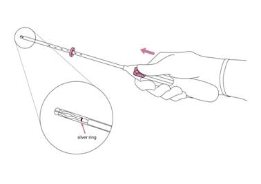
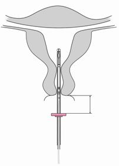
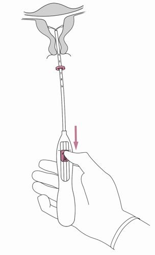
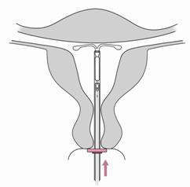
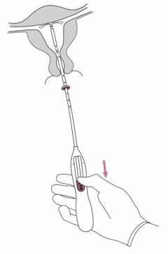
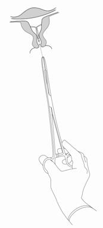

RÉSUMÉ DES CARACTÉRISTIQUES DU PRODUIT
ANSM - Mis à jour le : 09/07/2014
1. DENOMINATION DU MEDICAMENT
JAYDESS 13,5 mg, système de diffusion intra-utérin
2. COMPOSITION QUALITATIVE ET QUANTITATIVE
lévornorgestrel ................................................................................................................................. 13,5 mg
Pour un système
Pour la liste complète des excipients, voir rubrique 6.1.
Pour plus d’informations sur le taux de libération, voir rubrique 5.2.
3. FORME PHARMACEUTIQUE
Système de diffusion intra-utérin (SIU).
Le produit est composé d’un réservoir médicamenteux blanchâtre ou jaune pâle avec une membrane semi-opaque, monté sur la tige verticale du corps en T du système. En outre, la tige verticale comporte un anneau d’argent situé à proximité des bras horizontaux. Le corps en T est doté d’une boucle à une extrémité de la tige verticale et de deux bras horizontaux à l’autre extrémité. Les fils de retrait sont fixés sur la boucle. La tige verticale du SIU est placée dans le tube d’insertion, à l’extrémité de l’inserteur. Le SIU et l’inserteur sont pratiquement dépourvus d’impuretés visibles.
Dimensions de JAYDESS : 28 x 30 x 1,55 mm
4. DONNEES CLINIQUES
4.1. Indications thérapeutiques
Contraception pour une durée maximale de 3 ans.
4.2. Posologie et mode d'administration
Après insertion dans la cavité utérine, JAYDESS est efficace pour une durée maximale de trois ans.
Posologie
Insertion et retrait/remplacement
Il est recommandé que la pose de JAYDESS soit réalisée exclusivement par un professionnel de santé familiarisé avec la technique de pose des SIU et/ou ayant reçu une formation à la technique de pose de JAYDESS.
JAYDESS doit être mis en place dans la cavité utérine au cours des 7 jours qui suivent le début des règles. JAYDESS peut être remplacé par un nouveau système à n’importe quelle période du cycle. JAYDESS peut également être posé immédiatement après un avortement du premier trimestre.
Au cours du post-partum, le système ne peut être mis en place qu’après involution complète de l’utérus et, dans tous les cas, au plus tôt six semaines après l’accouchement. Si l’involution utérine est significativement retardée, il convient d’attendre jusqu’à 12 semaines après l’accouchement.
En cas d’insertion difficile, ou de douleurs ou de saignements anormaux, pendant ou après l’insertion, des mesures appropriées, telles qu’un examen clinique et une échographie, doivent être prises immédiatement afin d’exclure toute perforation.
JAYDESS se distingue des autres SIU par la visibilité de son anneau d’argent à l’échographie. La structure en T de JAYDESS contient du sulfate de baryum, ce qui permet de rendre le système visible à la radiographie.
Le retrait de JAYDESS est effectué en tirant délicatement sur les fils à l’aide d’une pince. Si les fils ne sont pas visibles mais si la présence du système dans la cavité utérine est confirmée par l’échographie, celui-ci peut être retiré à l’aide d’une pince fine ; une dilatation du canal cervical ou une intervention chirurgicale peut être nécessaire.
Le système doit être retiré au plus tard à la fin de la troisième année. Si la patiente souhaite continuer d’utiliser la même méthode, un nouveau système peut être posé immédiatement après le retrait de l’ancien système.
Si une grossesse n’est pas souhaitée, le système doit être retiré pendant les 7 premiers jours du cycle menstruel s’il persiste un cycle menstruel. Si le système est retiré à un autre moment du cycle et que la patiente a eu des rapports sexuels dans la semaine précédente, l’efficacité contraceptive n’est assurée que si un nouveau système est inséré immédiatement après le retrait.
Après le retrait de JAYDESS, le système doit être inspecté afin de vérifier qu’il est intact.
Patientes âgées
JAYDESS n’a pas été étudié chez les femmes âgées de plus de 65 ans. JAYDESS n’est pas indiqué chez les femmes ménopausées.
Patientes atteintes d’insuffisance hépatique
JAYDESS n’a pas été étudié chez les femmes atteintes d’insuffisance hépatique. L’utilisation de JAYDESS est contre-indiquée chez les femmes présentant une affection hépatique aiguë ou une tumeur hépatique (voir rubrique 4.3).
Patientes atteintes d’insuffisance rénale
JAYDESS n’a pas été étudié chez les femmes atteintes d’insuffisance rénale.
Population pédiatrique
La sécurité et l’efficacité du système n’ont pas étudiées chez les jeunes femmes âgées de moins de 18 ans. L’utilisation de ce produit n’est pas indiquée avant la ménarche.
Mode d’administration
JAYDESS doit être posé par un professionnel de santé, dans des conditions d’asepsie.
JAYDESS est conditionné dans un inserteur sous emballage stérile, lequel ne doit être ouvert qu’au moment de l’insertion. Ne pas restériliser. Tel qu’il est fourni, JAYDESS est à usage unique strict. Ne pas l’utiliser si l’emballage thermoformé est endommagé ou ouvert. Ne pas insérer le système après la date de péremption indiquée sur la boîte et sur l’emballage thermoformé après EXP.
Tout médicament non utilisé ou tout déchet doit être éliminé conformément à la réglementation en vigueur.
Préparation à l’insertion
· Déterminer la taille et la position de l’utérus par un examen gynécologique pour détecter tout signe d’infection génitale aiguë ou toute autre contre-indication à la pose de JAYDESS. Un test de grossesse doit être effectué s’il y a le moindre doute à ce sujet.
· Placer le spéculum, visualiser le col utérin, puis nettoyer soigneusement le col et le vagin à l’aide d’une solution antiseptique adaptée.
· Faire appel à un assistant si nécessaire.
· Saisir la lèvre antérieure du col utérin à l’aide d’une pince de Pozzi ou d’une autre pince pour aligner le canal cervical et la cavité utérine. Dans le cas d’un utérus rétroversé, il peut être plus adapté de saisir la lèvre postérieure du col utérin. Une légère traction sur la pince permet d’aligner le canal cervical. La pince doit être maintenue en place et une légère traction sur le col doit être exercée pendant toute la durée de la procédure d’insertion.
· Insérer un hystéromètre à travers le canal cervical et jusqu’au fond de la cavité utérine pour déterminer la profondeur et la direction de la cavité utérine et afin d’écarter tout signe d’anomalies intra-utérines (par exemple septum, fibromyomes sous-muqueux) ou la présence d’un contraceptif intra-utérin qui aurait été préalablement posé et n’aurait pas été retiré. En cas de difficulté, il faut envisager la dilatation du canal cervical. Lorsqu’une dilatation cervicale est requise, envisager le recours à des analgésiques ou à un bloc para-cervical.
Insertion
|
1. Commencer par ouvrir entièrement l’emballage stérile (figure 1). Travailler dans des conditions d’asepsie, avec des gants stériles.
Poignée contenant les fils
|
|
Tube inserteur contenant un poussoir et une échelle graduée
|
|
   
|
|
2. Pousser le curseur vers le haut (dans le sens de la flèche) jusqu’au bout afin de faire entrer JAYDESS dans le tube inserteur (figure 2).
|

|
|
IMPORTANT ! Ne pas ramener le curseur vers le bas car cette action pourrait libérer JAYDESS prématurément. Une fois libéré, JAYDESS ne peut plus être replacé dans le tube inserteur.
|
|
3. Tout en maintenant le curseur avancé en position haute, positionner le bord supérieur de la bague au niveau de la valeur correspondant à la profondeur utérine mesurée avec l’hystéromètre (figure 3).
|

|
|
4. Tout en maintenant le curseur en position haute, introduire le tube inserteur dans le canal cervical jusqu’à ce que la bague soit à une distance d’environ 1 ,5 à 2,0 cm de l’orifice externe du col utérin (figure 4).
|

|
|
IMPORTANT ! Ne pas forcer lors de l’introduction du tube inserteur. Si nécessaire, dilater le canal cervical.
|
|
5. Tout en tenant fermement l’inserteur, ramener le curseur jusqu’au repère pour déployer les bras latéraux de JAYDESS (figure 5). Attendre 5 à 10 secondes que les bras latéraux soient totalement déployés.
|

|
|
|
6. Pousser délicatement l’inserteur vers le fond de l’utérus jusqu’à ce que la bague soit au contact du col utérin. JAYDESS est à présent positionné sur le fond utérin (figure 6).
|

|
|
|
7. Tout en maintenant l’inserteur en place, ramener complètement le curseur vers le bas pour libérer JAYDESS (figure 7). Retirer le tube inserteur tout en gardant le curseur dans la position basse. Couper les fils à environ 2–3 cm du col utérin pour les laisser visibles.
|

|
|
|
IMPORTANT ! En cas de doute sur le bon positionnement de JAYDESS, vérifier sa position (par exemple, par une échographie). En cas de mauvaise position dans la cavité utérine, JAYDESS doit être retiré. Ne jamais réinsérer un système qui a été retiré.
|
|
|
|
|
|
Retrait/remplacement
Concernant le retrait/remplacement du système, voir la rubrique 4.2, « Insertion et retrait/remplacement ».
|
Pour retirer JAYDESS, tirer sur les fils avec une pince (figure 8).
Un nouveau système JAYDESS peut être inséré immédiatement après le retrait de l’ancien.
Après le retrait de JAYDESS, le système doit être inspecté afin de vérifier qu’il est intact.
|

|
4.3. Contre-indications
· Grossesse (voir rubrique 4.6) ;
· Maladie inflammatoire pelvienne aiguë ou récidivante ou affections associées à un risque accru d’infections pelviennes ;
· Cervicite ou vaginite aiguë ;
· Endométrite du postpartum ou antécédent d’avortement septique au cours des trois derniers mois ;
· Néoplasie cervicale intra-épithéliale, jusqu’à résolution ;
· Affection maligne du col ou du corps utérin ;
· Tumeurs sensibles aux progestatifs, par exemple, cancer du sein ;
· Saignements vaginaux anormaux d’étiologie inconnue ;
· Anomalies congénitales ou acquises de l’utérus, notamment les fibromyomes susceptibles de perturber la pose ou le maintien en place du système intra-utérin (s’ils déforment la cavité utérine) ;
· Affection hépatique aiguë ou tumeur hépatique ;
· Hypersensibilité à la substance active ou à l’un des excipients mentionnés à la rubrique 6.1.
4.4. Mises en garde spéciales et précautions d'emploi
JAYDESS doit être utilisé avec précaution après consultation d’un spécialiste et le retrait du système doit être envisagé en cas de survenue ou d’aggravation, pour la première fois, de l’un des troubles suivants:
· migraine, migraine focale avec perte de vision asymétrique ou autres symptômes indiquant une ischémie cérébrale transitoire
· maux de tête exceptionnellement sévères
· ictère
· augmentation importante de la pression artérielle
· pathologie artérielle sévère tel qu’un AVC ou un infarctus du myocarde
Le lévonorgestrel à faible dose peut affecter la tolérance au glucose et la glycémie doit être surveillée chez les utilisatrices de JAYDESS qui sont atteintes de diabète. Cependant, il n’est généralement pas nécessaire de modifier la posologie du traitement antidiabétique chez les femmes diabétiques utilisant un SIU au lévonorgestrel.
Consultation/examen médical
Avant insertion du système, la patiente doit être informée des bénéfices et risques de JAYDESS, notamment du risque de grossesse extra-utérine, voir ci-après. Un examen clinique, incluant un examen pelvien, un examen des seins et un frottis cervical, doit être pratiqué. Toute grossesse ou maladie sexuellement transmissible doit être exclue. Les infections génitales doivent avoir été traitées avec succès avant l’insertion. La position de l’utérus et la taille de la cavité utérine doivent être déterminées. Il est important que JAYDESS soit positionné au fond de la cavité afin d’en optimiser l’efficacité et de réduire le risque d’expulsion. Les instructions de pose doivent être scrupuleusement suivies.
Une formation à la technique de pose appropriée est recommandée.
L’insertion et le retrait peuvent provoquer des douleurs et des saignements. La procédure peut déclencher une réaction vasovagale (par exemple, une syncope) ou une crise convulsive si la patiente est épileptique.
La patiente doit être à nouveau examinée 4 à 6 semaines après l’insertion afin de contrôler les fils et de vérifier que le système est correctement positionné. Des visites de contrôle sont ensuite recommandées une fois par an, voire plus souvent si la situation clinique le requiert.
JAYDESS ne doit pas être utilisé en tant que contraception post-coïtale.
L'utilisation de JAYDESS dans le traitement des saignements menstruels abondants ou la protection contre l’hyperplasie de l'endomètre lors d’un traitement hormonal de substitution par œstrogène n'a pas été établie. Par conséquent, son utilisation n’est pas recommandée dans ces pathologies.
Grossesse extra-utérine
Dans les essais cliniques, l’incidence globale des grossesses extra-utérines avec JAYDESS a été d’environ 0,11 pour 100 années-femmes. Environ la moitié des grossesses survenant avec JAYDESS sont susceptibles d’être ectopiques.
Les patientes doivent être informées des signes et symptômes de la grossesse extra-utérine et des risques associés. Chez toute femme présentant une grossesse pendant l’utilisation de JAYDESS, la possibilité d’une grossesse extra-utérine doit être envisagée et évaluée.
Le risque de grossesse extra-utérine est accru chez les femmes ayant des antécédents de grossesse extra-utérine, de chirurgie des trompes ou d’infection pelvienne. La possibilité d’une grossesse extra-utérine doit être envisagée en cas de douleur abdominale basse, en particulier si elle s’accompagne d’une absence de menstruation ou si des saignements apparaissent chez une femme jusque-là en aménorrhée.
Une grossesse extra-utérine peut avoir un impact sur la fécondité ultérieure, il convient donc d’évaluer avec attention les bénéfices et les risques liés à l’utilisation de JAYDESS, en particulier chez les nullipares.
Utilisation chez les nullipares : JAYDESS n’est pas une méthode contraceptive de première intention chez les nullipares car l’expérience clinique est limitée.
Effets sur le cycle menstruel
Des effets sur le cycle menstruel sont attendus chez la plupart des utilisatrices de JAYDESS. Ces modifications résultent de l’action directe du lévonorgestrel sur l’endomètre et peuvent ne pas être en corrélation avec l’activité ovarienne.
Des saignements irréguliers et des spottings sont fréquents au cours des premiers mois d’utilisation. Par la suite, la forte inhibition de l’endomètre entraîne une réduction de la durée et du volume des saignements menstruels. Il est fréquent qu’un flux menstruel diminué évolue vers une oligoménorrhée ou une aménorrhée.
Dans les essais cliniques, une oligoménorrhée et/ou une aménorrhée se sont progressivement installées chez environ 22,3 % et 11,6 % des utilisatrices, respectivement. L’éventualité d’une grossesse doit être envisagée si les règles ne surviennent pas dans les six semaines suivant le début des règles précédentes. Devant la persistance d’une aménorrhée, la répétition d’un test de grossesse n’est justifiée que si d’autres signes de grossesse sont présents.
Si les saignements deviennent plus abondants et/ou plus irréguliers au fil du temps, des mesures diagnostiques appropriées doivent être prises car les saignements irréguliers peuvent être un symptôme de polypes endométriaux, d’hyperplasie ou de cancer et les saignements abondants peuvent être le signe d’une expulsion du système qui serait passée inaperçue.
Infection pelvienne
Bien que le système JAYDESS et l’inserteur soient initialement stériles, ils peuvent, suite à une contamination bactérienne lors de l’insertion, devenir un vecteur d’infection microbienne au niveau de l’appareil génital haut. Des infections pelviennes ont été signalées lors de l’utilisation de tous les systèmes ou dispositifs intra-utérins, qu’ils soient hormonaux ou non. Dans les essais cliniques, les cas de maladie inflammatoire pelvienne (MIP) ont été plus fréquents en début d’utilisation de JAYDESS. Ceci est cohérent avec les données publiées sur les DIU au cuivre, avec lesquels la fréquence des MIP est maximale lors des 3 premières semaines suivant l’insertion et diminue ensuite.
Avant de choisir JAYDESS, les facteurs de risque associés aux infections pelviennes (par exemple : partenaires multiples, infections sexuellement transmissibles, antécédents de MIP) doivent faire l’objet d’une évaluation complète. Les infections pelviennes telles que les MIP peuvent avoir de graves conséquences et peuvent altérer la fécondité et augmenter le risque de grossesse ectopique.
Une infection sévère ou une septicémie (y compris une septicémie à streptocoques du groupe A) peut survenir après l'insertion du DIU, comme cela peut également être le cas avec d'autres interventions gynécologiques ou chirurgicales ; ce type d’évènement est extrêmement rare.
JAYDESS doit être retiré si la femme présente une endométrite ou une maladie inflammatoire pelvienne récidivante ; ou en cas d’infection aiguë sévère ou ne répondant pas au traitement.
Des examens bactériologiques sont indiqués et une surveillance est recommandée, même en cas de symptômes mineurs évocateurs d’une infection.
Expulsion
Dans les essais cliniques menés avec JAYDESS, l’incidence des expulsions a été faible et du même ordre que celle décrite pour les autres systèmes ou dispositifs intra-utérins, qu’ils soient hormonaux ou non. Une expulsion partielle ou complète de JAYDESS peut se manifester par des saignements ou des douleurs. Cependant, l’expulsion partielle ou complète peut également se produire sans que la patiente ne s’en aperçoive, entraînant une réduction ou une perte de l’effet contraceptif. Dans la mesure où JAYDESS engendre habituellement une réduction des saignements menstruels au fil du temps, l’augmentation des saignements menstruels peut être le signe d’une expulsion.
En cas d’expulsion partielle, JAYDESS doit être retiré. Un nouveau système peut être inséré lors de la même consultation à condition que toute grossesse ait été exclue.
Il convient d’expliquer à la patiente comment contrôler les fils de JAYDESS et de lui indiquer de contacter son professionnel de santé si elle ne les sent plus.
Perforation
Le SIU peut perforer ou pénétrer le corps ou le col de l’utérus. Cet incident est rare, il survient le plus souvent au cours de l’insertion, et peut réduire l’efficacité de JAYDESS. Si la pose a été difficile et/ou si des douleurs ou des saignements anormaux apparaissent pendant ou après l’insertion, des mesures appropriées, telles qu’un examen clinique et une échographie, doivent être prises immédiatement afin d’exclure toute perforation. Dans de telles situations, le système doit être retiré. Le risque de perforation est accru chez une femme qui allaite et peut être augmenté lorsque l’insertion est effectuée en postpartum (voir rubrique 4.2) ou chez une femme dont l’utérus est rétroversé fixé.
Disparition des fils
Si les fils de retrait ne sont plus visibles au niveau du col de l’utérus lors de l’examen de contrôle, une grossesse, ainsi qu’une expulsion du système qui serait passée inaperçue, doivent être exclues. Les fils peuvent être remontés dans l’utérus ou le canal cervical et réapparaître lors des règles suivantes. Une fois la présence d’une grossesse exclue, les fils peuvent généralement être localisés en explorant délicatement le canal cervical à l’aide d’un instrument adapté. S’ils restent introuvables, il est possible que le système ait été expulsé. L’échographie peut être utilisée pour vérifier le positionnement du système. En cas d’indisponibilité ou d’échec de l’échographie, la radiographie peut être utilisée pour localiser le système.
Kystes ovariens/hypertrophie des follicules ovariens
L’efficacité contraceptive de JAYDESS étant principalement due à ses effets locaux au niveau de l’utérus, il n’est généralement pas observé de modification de la fonction ovulatoire, y compris des processus normaux de développement folliculaire, de libération des ovocytes et d’atrésie folliculaire chez les femmes en âge de procréer. Dans certains cas, l’atrésie folliculaire est retardée et la folliculogenèse se poursuit. Ces follicules hypertrophiés, qui ne peuvent être distingués cliniquement des kystes ovariens, ont été signalés parmi les effets indésirables dans les essais cliniques chez environ 13,2 % des femmes utilisant JAYDESS, et incluaient des kystes ovariens, des kystes ovariens hémorragiques et des kystes ovariens rompus. Ces kystes sont le plus souvent asymptomatiques, bien que certains puissent être accompagnés de douleurs pelviennes ou d’une dyspareunie.
Dans la plupart des cas, les follicules hypertrophiés disparaissent spontanément dans les deux à trois mois. En l’absence de disparition spontanée des follicules hypertrophiés, la poursuite d’une surveillance échographique et d’autres mesures diagnostiques ou thérapeutiques pourront être indiquées. Dans de rares cas, une intervention chirurgicale pourra s’imposer.
4.5. Interactions avec d'autres médicaments et autres formes d'interactions
Des interactions sont possibles avec les médicaments qui sont des inducteurs des enzymes microsomales hépatiques, et plus particulièrement des enzymes du cytochrome P450, et sont donc susceptibles d’augmenter le métabolisme du lévonorgestrel, entraînant une clairance accrue des hormones sexuelles (par exemple, phénytoïne, barbituriques, primidone, carbamazépine, rifampicine, rifabutine, névirapine, éfavirenz, bosentan, ainsi que, éventuellement, oxcarbazépine, topiramate, felbamate, griséofulvine et produits contenant du millepertuis).
Inversement, les substances connues pour inhiber les enzymes de métabolisation des médicaments (par exemple, itraconazole, kétoconazole) peuvent accroître les concentrations sériques du lévonorgestrel.
L’influence de ces médicaments sur l’efficacité de JAYDESS n’est pas connue, mais elle ne devrait pas avoir d’impact majeur étant donné le mécanisme d’action local du système.
Imagerie par résonance magnétique (IRM)
Les tests non cliniques ont montré que les patientes pouvaient bénéficier d’une IRM en toute sécurité lorsque JAYDESS est en place dans les conditions suivantes : champ magnétique statique de 3 Tesla ou moins, gradient spatial de champ magnétique maximal de 720 Gauss/cm ou moins. Dans ces conditions, lors d’un examen de 15 minutes, la hausse de température maximale survenue au niveau du système JAYDESS a été de 1,8°C. Des artéfacts limités peuvent être observés si la région ciblée par l’imagerie se trouve exactement dans la même zone que le système JAYDESS ou en est relativement proche.
4.6. Grossesse et allaitement
Fécondité
L’utilisation d’un système de diffusion intra-utérin au lévonorgestrel n’a aucune incidence sur la fécondité ultérieure. Après le retrait du système intra-utérin, les patientes retrouvent leur fécondité normale (voir rubrique 5.1).
Grossesse
La pose de JAYDESS chez les femmes enceintes est contre-indiquée (voir rubrique 4.3).
En cas de grossesse débutant pendant l’utilisation de JAYDESS, l’éventualité d’une grossesse extra-utérine doit être exclue et il est recommandé de retirer rapidement le système car le maintien en place de tout contraceptif intra-utérin peut augmenter le risque d’avortement et de travail prématuré. Le retrait de JAYDESS ou l’exploration de l’utérus peuvent également provoquer un avortement spontané. Si la patiente souhaite poursuivre la grossesse et si le système ne peut pas être retiré, elle devra être informée des risques et de la possibilité d’une naissance prématurée de l’enfant. Toute grossesse se déroulant dans un tel contexte doit faire l’objet d’une étroite surveillance. La patiente doit recevoir pour instruction de signaler tous les symptômes évocateurs de complications gestationnelles, telles que des crampes abdominales accompagnées de fièvre.
En raison de l’administration intra-utérine du produit et de l’exposition locale au lévonorgestrel, l’apparition éventuelle d’effets virilisants sur les fœtus de sexe féminin doit être prise en considération. Étant donnée la haute efficacité contraceptive du système, l’expérience clinique concernant l’issue des grossesses sous traitement par JAYDESS est limitée. Les femmes doivent être informées qu’à ce jour, il n’a pas été mis en évidence de lien de causalité entre des anomalies congénitales et l’utilisation d’un système de diffusion intra-utérin au lévonorgestrel lorsqu’une grossesse a été menée à terme avec le maintien en place du SIU au lévonorgestrel.
Allaitement
De façon générale, aucun effet délétère sur la croissance ou le développement du nourrisson ne semble être observé lors de l’utilisation de méthodes uniquement progestatives à partir de six semaines après l’accouchement. L’utilisation d’un système de diffusion intra-utérin au lévonorgestrel n’altère ni la quantité ni la qualité du lait maternel. Lors de l’allaitement, de faibles quantités de progestatif (environ 0,1 % de la dose de lévonorgestrel) passent dans le lait maternel.
4.7. Effets sur l'aptitude à conduire des véhicules et à utiliser des machines
JAYDESS n’a aucun effet sur l’aptitude à conduire des véhicules et à utiliser des machines.
4.8. Effets indésirables
Résumé du profil de sécurité
La plupart des femmes connaissent des modifications de leur cycle menstruel après l’insertion de JAYDESS. Au fil du temps, la fréquence de l’aménorrhée et de l’oligoménorrhée augmente et la fréquence des saignements prolongés ou fréquents diminue. Les évolutions suivantes du cycle menstruel ont été observées dans les essais cliniques :
Tableau 1 : Évolutions du cycle menstruel décrites avec JAYDESS dans les essais cliniques
|
JAYDESS
|
90 premiers jours
|
90 jours suivants
|
Fin de la 1ère année
|
Fin de la 3ème année
|
|
Aménorrhée
|
< 1 %
|
3 %
|
6 %
|
12 %
|
|
Oligoménorrhée
|
8 %
|
19 %
|
20 %
|
22 %
|
|
Saignements fréquents
|
31 %
|
12 %
|
8 %
|
4 %
|
|
Saignements prolongés*
|
59 %
|
17 %
|
9 %
|
3 %
|
- Les patientes ayant connu des saignements prolongés peuvent également être incluses dans l’une des autres catégories (sauf l’aménorrhée)
Tableau récapitulatif des effets indésirables
Les fréquences des effets indésirables signalés avec JAYDESS sont récapitulées dans le tableau ci-dessous. Au sein de chaque groupe de fréquence, les effets indésirables sont présentés par ordre décroissant de gravité. Les fréquences sont définies comme suit :
très fréquent (≥ 1/10),
fréquent (≥ 1/100, < 1/10),
peu fréquent (≥ 1/1 000 ; < 1/100),
rare (≥ 1/10 000, < 1/1 000),
très rare (< 1/10 000).
|
Classe de systèmes d’organes
|
Très fréquent
|
Fréquent
|
Peu fréquent
|
Rare
|
|
Affections psychiatriques
|
|
Humeur dépressive/ Dépression
|
|
|
|
Affections du système nerveux
|
Céphalée
|
Migraine
|
|
|
|
Affections gastro-intestinales
|
Douleur abdominale/ pelvienne
|
Nausées
|
|
|
|
Affections de la peau et du tissu sous-cutané
|
Acné/séborrhée
|
Alopécie
|
Hirsutisme
|
|
|
Affections des organes de reproduction et du sein
|
Modifications des règles y compris augmentation et réduction des saignements menstruels, spottings, oligoménorrhée et aménorrhée
Kyste ovarien*
Vulvo-vaginite
|
Infection de l’appareil génital haut
Dysménorrhée
Douleur/gêne mammaire
Expulsion du dispositif (complète ou partielle)
Pertes génitales
|
|
Perforation utérine
|
* Dans les essais cliniques, les kystes ovariens devaient être signalés en tant qu’effets indésirables s’il s’agissait de kystes anormaux, non fonctionnels, et/ou ayant un diamètre > 3 cm à l’échographie.
Description de certains effets indésirables particuliers
Lors de l’utilisation d’un autre SIU au lévonorgestrel, des cas d’hypersensibilité, avec notamment éruption cutanée, urticaire et angiœdème ont été signalés.
Lorsqu’une femme débute une grossesse pendant l’utilisation de JAYDESS, le risque relatif que cette grossesse soit extra-utérine est accru (voir le paragraphe « Grossesse extra-utérine » dans la rubrique 4.4).
Il est possible que le partenaire sente les fils de retrait pendant les rapports sexuels.
Les essais cliniques menés avec JAYDESS ont exclu les femmes allaitant. Une large étude de sécurité post-autorisation avec d’autres DIU/SIU montre un risque accru de perforation chez les femmes qui allaitent (voir rubrique 4.4 - Perforation).
Les effets indésirables suivants ont été signalés lors de la pose ou du retrait de JAYDESS :
douleur associée, saignement associé, réaction vasovagale liée à l’insertion avec étourdissement ou syncope.
La procédure peut déclencher une crise convulsive si la patiente est épileptique.
Des cas de septicémie (y compris des septicémies à streptocoques du groupe A) ont été rapportés après l’insertion d’autres DIU (voir rubrique 4.4 - Infection pelvienne).
Déclaration des effets indésirables suspectés
La déclaration des effets indésirables suspectés après autorisation du médicament est importante. Elle permet une surveillance continue du rapport bénéfice/risque du médicament. Les professionnels de santé déclarent tout effet indésirable suspecté via le système national de déclaration : Agence nationale de sécurité du médicament et des produits de santé (Ansm) et réseau des Centres Régionaux de Pharmacovigilance - Site internet : www.ansm.sante.fr
4.9. Surdosage
Sans objet.
5. PROPRIETES PHARMACOLOGIQUES
5.1. Propriétés pharmacodynamiques
Classe pharmacothérapeutique : système de diffusion intra-utérin en plastique contenant un progestatif, Code ATC : G02BA03
Effets pharmacodynamiques
JAYDESS exerce principalement des effets progestatifs locaux dans la cavité utérine.
La forte concentration en lévonorgestrel dans l’endomètre entraîne une régulation négative des récepteurs endométriaux aux estrogènes et à la progestérone. L’endomètre devient relativement insensible à l’estradiol circulant et un puissant effet antiprolifératif est observé. Des modifications morphologiques de l’endomètre et une faible réaction locale à corps étranger sont constatées au cours de l’utilisation. L’épaississement de la glaire cervicale empêche le passage des spermatozoïdes au travers du canal cervical. L’environnement local de l’utérus et des trompes de Fallope inhibe la mobilité et la fonctionnalité des spermatozoïdes, empêchant la fécondation. Dans les essais cliniques menés avec JAYDESS, une ovulation a été observée chez la majorité des patientes étudiées. L’ovulation a été mise en évidence chez 34 femmes sur 35 la première année, 26 femmes sur 27 la deuxième année et chez la totalité des 27 femmes la troisième année.
Efficacité et sécurité cliniques
L’efficacité contraceptive de JAYDESS a été évaluée dans une étude clinique menée chez 1 432 femmes âgées de 18 à 35 ans, dont 38,8 % (556) de femmes nullipares, parmi lesquelles 83,6 % (465) étaient nulligestes. L’indice de Pearl à 1 an a été de 0,41 (intervalle de confiance à 95 % : 0,13–0,96) et l’indice de Pearl à 3 ans a été de 0,33 (intervalle de confiance à 95 % : 0,16–0,60). Le taux d’échec a été d’environ 0,4 % à 1 an et le taux d’échec cumulé a été d’environ 0,9 % à 3 ans. Ce taux d’échec prend également en compte les grossesses dues aux expulsions et perforations passées inaperçues. L’utilisation d’un système de diffusion intra-utérin au lévonorgestrel n’a aucune incidence sur la fécondité ultérieure. D’après les données relatives à un système de diffusion intra-utérin au lévonorgestrel plus fortement dosé, environ 80 % des femmes désirant une grossesse sont enceintes dans les 12 mois ayant suivi le retrait du système.
Lors de l’utilisation de JAYDESS, les modifications du cycle menstruel résultent de l’action directe du lévonorgestrel sur l’endomètre et ne reflètent pas nécessairement le cycle ovarien. Aucune différence nette n’est observée au niveau du développement folliculaire, de l’ovulation ou de la production d’estradiol et de progestérone chez les femmes présentant des schémas de saignements différents. Dans le cadre de l’inhibition de la prolifération endométriale, une augmentation initiale des spottings peut être observée au cours des premiers mois d’utilisation. Par la suite, la forte inhibition de l’endomètre entraîne une réduction de la durée et du volume des saignements menstruels au cours de l’utilisation de JAYDESS. Il est fréquent que la diminution du flux menstruel évolue vers une oligoménorrhée ou une aménorrhée. La fonction ovarienne reste normale et les taux d’estradiol se maintiennent, même en cas d’aménorrhée chez les utilisatrices de JAYDESS.
5.2. Propriétés pharmacocinétiques
Le lévonorgestrel est libéré localement dans la cavité utérine. La courbe de libération in vivo est caractérisée par une forte baisse initiale, qui ralentit progressivement, pour rester pratiquement constante après 1 an jusqu’à la fin des 3 années d’utilisation prévue.
Les taux de libération in vivo estimés aux différents temps sont présentés dans le tableau 2.
Tableau 2 : taux de libération in vivo estimés d’après les données sur les teneurs résiduelles mesurées ex vivo
|
Délai
|
Taux de libération in vivo estimé
[microgrammes/24 heures]
|
|
24 jours après l’insertion
|
14
|
|
60 jours après l’insertion
|
10
|
|
1 an après l’insertion
|
6
|
|
3 ans après l’insertion
|
5
|
|
Moyenne sur 3 ans
|
6
|
Absorption
Suite à l’insertion, le lévonorgestrel est immédiatement libéré par le SIU dans la cavité utérine, d’après les mesures des concentrations sériques. Les pics de concentration sérique du lévonorgestrel sont atteints dans les deux premières semaines suivant l’insertion de JAYDESS. Sept jours après l’insertion, une concentration moyenne du lévonorgestrel de 162 pg/ml a été mise en évidence. Par la suite, les concentrations sériques du lévonorgestrel déclinent au fil du temps jusqu’à atteindre des concentrations moyennes de 59 pg/ml au bout de 3 ans. Lors de l’utilisation d’un système de diffusion intra-utérin au lévonorgestrel, l’importante exposition locale au lévonorgestrel dans la cavité utérine entraîne un fort gradient de concentration entre l’endomètre et le myomètre (gradient entre l’endomètre et le myomètre > facteur 100) et de faibles concentrations en lévonorgestrel dans le sérum (gradient entre l’endomètre et le sérum > facteur 1 000).
Distribution
Le lévonorgestrel se lie de façon non spécifique à l’albumine sérique et de façon spécifique à la SHBG. Moins de 2 % du lévonorgestrel circulant est présent sous forme de stéroïde libre. Le lévonorgestrel se lie à la SHBG avec une forte affinité. En conséquence, les modifications de la concentration sérique de la SHBG entraînent une augmentation (si les concentrations de SHBG sont accrues) ou une diminution (si les concentrations de SHBG sont réduites) de la concentration sérique totale du lévonorgestrel. Dans un délai d’un mois après l’insertion de JAYDESS, la concentration de la SHBG décline d’environ 30 %. Par la suite, les concentrations de la SHBG se stabilisent (plateau), puis tendent à augmenter au fil du temps vers les valeurs initiales. Le volume de distribution apparent moyen du lévonorgestrel est d’environ 106 L.
Biotransformation
Le lévonorgestrel est très largement métabolisé. Les principaux métabolites retrouvés dans le plasma sont les formes non conjuguées et conjuguées du 3a, 5b-tétrahydrolévonorgestrel. D’après les études in vitro et in vivo, le CYP3A4 est la principale enzyme intervenant dans la métabolisation du lévonorgestrel.
Élimination
La clairance plasmatique totale du lévonorgestrel est d’environ 1,0 ml/min/kg. Le lévonorgestrel n’est excrété sous forme inchangée qu’à l’état de traces. Les métabolites sont excrétés dans les selles et les urines avec un rapport d’excrétion d’environ 1. La demi-vie d’excrétion est d’environ 1 jour.
Linéarité/non-linéarité
Les propriétés pharmacocinétiques du lévonorgestrel dépendent de la concentration de la SHBG, laquelle est elle-même influencée par les estrogènes et les androgènes. Au cours du premier mois d’utilisation de JAYDESS, une réduction moyenne de la SHBG d’environ 30 % est observée, entraînant une réduction de la concentration sérique du lévonorgestrel, ce qui indique un profil non linéaire des propriétés pharmacocinétiques du lévonorgestrel en fonction du temps. Étant donné le mode d’action principalement local de JAYDESS, aucun impact sur l’efficacité de JAYDESS n’est attendu.
5.3. Données de sécurité préclinique
Les données non cliniques issues des études de pharmacologie de sécurité, des études pharmacocinétiques et de toxicologie, y compris les études sur la génotoxicité et le potentiel cancérogène du lévonorgestrel, n’ont pas révélé de risque particulier pour l’homme. Les études effectuées chez le singe avec diffusion intra-utérine de lévonorgestrel pendant 9 à 12 mois ont confirmé l’activité pharmacologique locale, avec une bonne tolérance locale et sans aucun signe de toxicité systémique. Aucune embryotoxicité n’a été observée chez le lapin suite à l’administration intra-utérine de lévonorgestrel. L’évaluation de la tolérance des composants élastomère du réservoir hormonal, du polyéthylène utilisé comme matériau dans le produit, de l’anneau d’argent et de l’association de l’élastomère et du lévonorgestrel, basée sur l’évaluation de la toxicologie génétique à l’aide des systèmes de test in vitro et in vivo standards ainsi que sur des tests de biocompatibilité chez la souris, le rat, le cobaye, le lapin et à l’aide de systèmes de test in vitro, n’ont pas révélé de bio-incompatibilité.
6. DONNEES PHARMACEUTIQUES
6.1. Liste des excipients
Élastomère polydiméthylsiloxane
Silice colloïdale anhydre
Polyéthylène
Sulfate de baryum
Oxyde de fer noir (E172)
Argent
6.2. Incompatibilités
Sans objet.
6.3. Durée de conservation
3 ans.
6.4. Précautions particulières de conservation
Ce médicament ne nécessite pas de précautions particulières de conservation.
6.5. Nature et contenu de l'emballage extérieur
Le système de diffusion intra-utérin est conditionné individuellement dans un emballage thermoformé (PETG) avec un opercule détachable (PE).Boite de 1 x 1 et 5 x 1.
Toutes les présentations peuvent ne pas être commercialisées.
6.6. Précautions particulières d’élimination et de manipulation
Le produit est fourni dans un emballage stérile qui ne doit être ouvert qu’au moment de l’insertion. Le système doit être manipulé en respectant les conditions d’asepsie. Si l’emballage stérile n’est pas hermétiquement fermé, le système contenu dans celui-ci doit être éliminé conformément à la réglementation en vigueur pour la manipulation des déchets à risque biologique. Les systèmes JAYDESS retirés et les inserteurs doivent également être éliminés conformément à cette réglementation. L’emballage extérieur en carton et l’emballage interne thermoformé peuvent être manipulés comme des déchets ménagers.
Doit être inséré par un professionnel de santé, selon une technique aseptique (voir rubrique 4.2).
7. TITULAIRE DE L’AUTORISATION DE MISE SUR LE MARCHE
BAYER HEALTHCARE SAS
220 avenue de la recherche
59120 LOOS
8. NUMERO(S) D’AUTORISATION DE MISE SUR LE MARCHE
274 194-7 ou 34009 274 194 7 8 : Système de diffusion intra-utérin dans un emballage thermoformé (PETG) avec un opercule détachable (PE).Boite de 1.
585 070-8 ou 34009 585 070 8 3 : Système de diffusion intra-utérin dans un emballage thermoformé (PETG) avec un opercule détachable (PE).Boite de 5.
9. DATE DE PREMIERE AUTORISATION/DE RENOUVELLEMENT DE L’AUTORISATION
Date de première autorisation :
<{JJ/MM/AAAA}>
<[À compléter au niveau national]>
10. DATE DE MISE A JOUR DU TEXTE
<{MM/AAAA}>
11. DOSIMETRIE
Sans objet.
12. INSTRUCTIONS POUR LA PREPARATION DES RADIOPHARMACEUTIQUES
Sans objet.
Liste I.